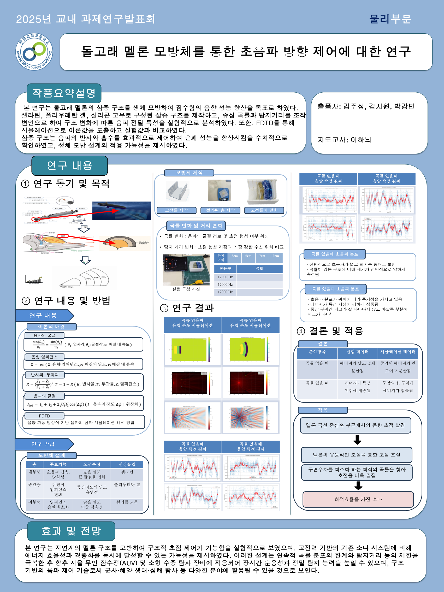

Dolphin Melon Inspired Ultrasonic Focusing Research
← Back to Main PageUltrasonic technology plays an important role in robotics, sensing systems, acoustic engineering, and medical imaging. However, conventional ultrasonic structures have limitations in directional control and focusing efficiency. This project investigates whether a dolphin melon-inspired biomimetic structure can improve ultrasonic wave focusing and directional precision.
• Designed biomimetic melon-inspired geometry
• Constructed ultrasonic focusing experiment
• Compared propagation characteristics
• Measured focusing and directional performance
• FDTD simulation method
• Acoustic wave propagation analysis
• Impedance comparison
• Experimental validation

This research suggests that dolphin-inspired
biomimetic structures may improve ultrasonic control systems.
Potential applications include:
• Robotic sensing systems
• Medical ultrasound technology
• Acoustic wave control systems
• Physical AI sensing hardware
• Intelligent scientific instrumentation
• STEAM R&E School Research Project
• Biomimetic acoustic system studies
• FDTD simulation methodology references
• Changwon Science High School research support